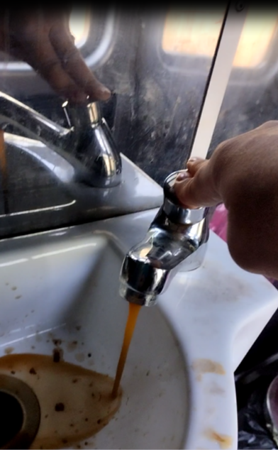
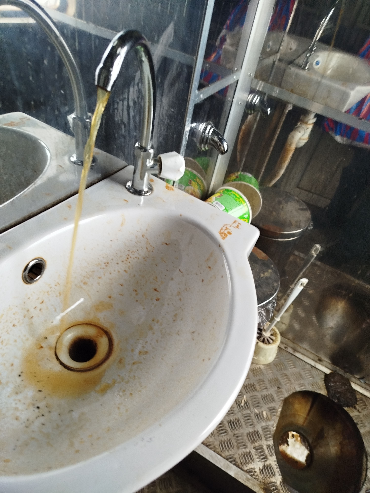

В последние годы резко ухудшилось санитарное состояние поездов пригородного сообщение, в особенности санитарных комнат. Оторванные краны, отсутствие воды, в том числе на смыве, неоткаченные унитазные чаши, вонь и грязь.. С учетом того, что руководство компании в курсе происходящего, создается впечатление, что данная халатность и бездействие допускаются намеренно. В ходе гражданского судопроизводства выяснилось, что в основе проблемы – отсутствие контроля руководства по вопросу откачки стоков и закачки воды. Обнаружилось отсутствие договорных отношений на откачку и закачку!
Еще оказалось, что юристы компании СЗППК не в курсе насчет билетов. Юристы требуют именные билеты, в то время как проездные контролеры не имеют представление об этом, отказывают в продаже именных проездных билетов, предлагая только то что могут предложить, Фактически, руководители жд транспорта волей-неволей столкнули лбами представителей разных профессий и разного социального статуса.
Доказательства ненадлежащего качества оказываемых услуг зафиксированы в большом количестве, на регулярной основе проводится мониторинг состояния санитарных комнат в составах СЗППК, на условиях действия акцептованной Ответчиком оферты от 14 июня 2024 года.
С начала лета 2024 года и по настоящее время в туалетах пригородных поездов, включая поезд повышенной комфортности Ласточка Выборгского направления зачастую отсутствовали вода для смыва в туалете, а еще чаще – в умывальниках. Туалеты не чистились, царила антисанитария, зайти туда зачастую просто страшно. Обращает на себя внимание факт отсутствия уборки также и в некоторых вагонах.

Несмотря на возражения представителя Ответчика, связанные с высказыванием недоверия относительно правдивости кадров и видеосюжетов, дело обстоит именно таким образом как показано на фото и видео. Истцу нет надобности намеренно искажать действительность. Никакими редакторами и средствами обработки изображений Истец не пользовался.
В процессе поездки происходило и происходит выборочное общение с контролерами поезда. В процессе такого общения подтверждается, что действительно имеются проблемы с санитарными комнатами, и что контролеры сообщают об этом дежурному администратору. Почему руководство АО СЗППК длительное время не принимает меры для устранения неполадок, восстановления сервиса в поездах пригородного сообщения, Истцу не понятно.
В процессе первого судопроизводства по данному вопросу в Октябрьском районном суде за полгода заседаний так и не удалось добиться от стороны Ответчика договоров с клиринговыми компаниями. Некоторые контролеры рассказывали, что уборками должна заниматься клиринговая компания, и следить за чистотой поездов никто другой не обязан. Истец задавал вопрос и помощникам машиниста относительно наполнения водой туалетов. Как было пояснено работниками поездов (имеется аудиофиксация), наполнение емкостей с водой происходит с определенной регулярностью (1 раз в несколько дней), то есть составы уезжают утром без воды.
Критические моменты, выявленные Истцом в ходе регулярных многочисленных осмотров санитарных комнат:
- отсутствует вода в кранах и/или в унитазе
- вместо воды присутствует жидкость грязно-желтого или коричневого цвета, иногда с фекальным запахом
- оторваны краны
- оторваны раковины
- неопорожненные унитазы
- антисанитария в целом
Данное уточнение обстоятельств дела, касаемых доказательной базы по исковому требованию, предъявленному Кредитором-Истцом Надеждой Олеговной Добропоровой для компенсации морального вреда в связи с инцидентами, происходящими практически на регулярной основе в поездах пригородного сообщения на Выборгском направлении Ленинградской области. При этом в части нарушения санитарно-эпидемиологических норм и правил нарушения со стороны компаний, обслуживающих пригородные поезда, происходят и по сей день.
Ответчиком по данному иску является Дебитор АКЦИОНЕРНОЕ ОБЩЕСТВО "СЕВЕРО-ЗАПАДНАЯ ПРИГОРОДНАЯ ПАССАЖИРСКАЯ КОМПАНИЯ", или АО "СЗППК" (ОГРН 1067847492888), которое возглавляет генеральный директор Мирон Артём Сергеевич.
Поскольку факт нарушений санитарных норм и правил уже нашел свое подтверждение, получается, что транспортная сеть уже длительное время представляет собой угрозу людям, сопряженную с угрозой жизни и здоровью людям – с точки зрения санитарно-эпидемиологического состояния, провоцирует распространение опасных заболеваний, включая холеру, чуму, другие инфекционные заболевания.
Ранее Истец обращался на горячую линию РЖД 8-800-775-00-00, полагая, что РЖД и СЗППК являются взаимосвязанными компаниями, с учетом характера взаимодействия и рекламных материалов, имеющихся на Интернет-сайтах компаний. Однако в ходе первого судопроизводства в Октябрьском районном суде подтвердилось, что СЗППК не является дочерним предприятием (филиалом) по отношению к РЖД. Данные из Единого государственного реестра юридических лиц подтверждают данный факт, однако представитель СЗППК в одном из заседаний заявила обратное, сославшись на Устав АО СЗППК. Истец полагает, что у СЗППК отсутствует сервис «горячая линия» в связи с нежеланием брать на себя ответственность за некачественный сервис и нанесение вреда жизни и здоровью.
Договоры должны исполняться надлежащим образом, в соответствии с установленными правилами и требованиями. Сторона договора, допустившая нарушения правил перевозки, обязана компенсировать убытки и моральный вред. Согласно законодательству Российской Федерации, на железнодорожном транспорте пассажиры имеют право на безопасную и комфортную поездку с соблюдением установленных правилами условий перевозки. Отсутствие воды, неисправность туалета, неоткрывающиеся на выходе двери являются нарушением условий перевозки.
Единственным основанием для освобождения перевозчика от ответственности является наличие обстоятельств непреодолимой силы. Таких обстоятельств установлено не было. Следовательно, суд должен возложить ответственность на перевозчика по выплате компенсации морального вреда Кредитору-Истцу.
